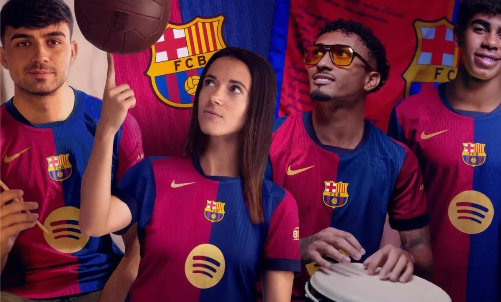
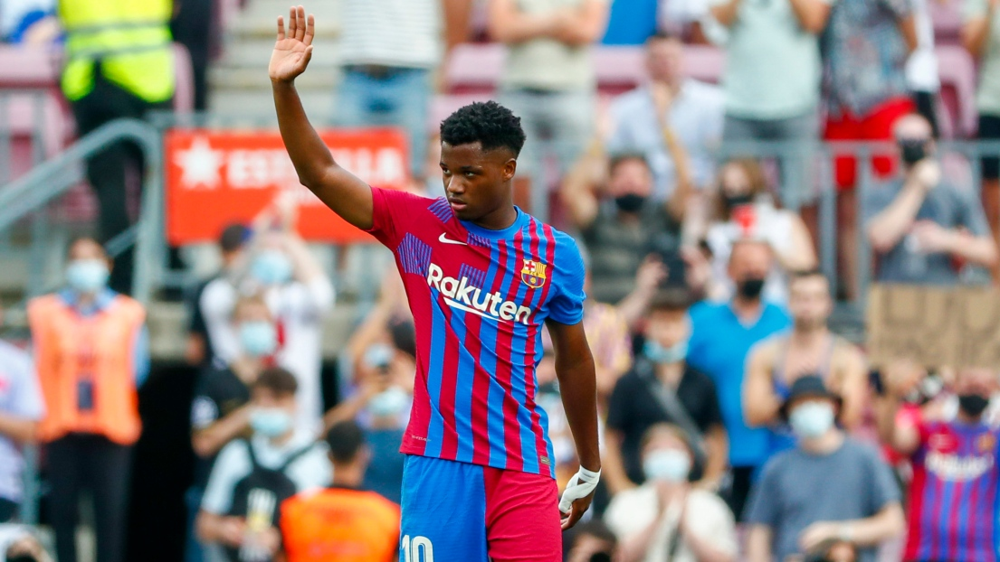
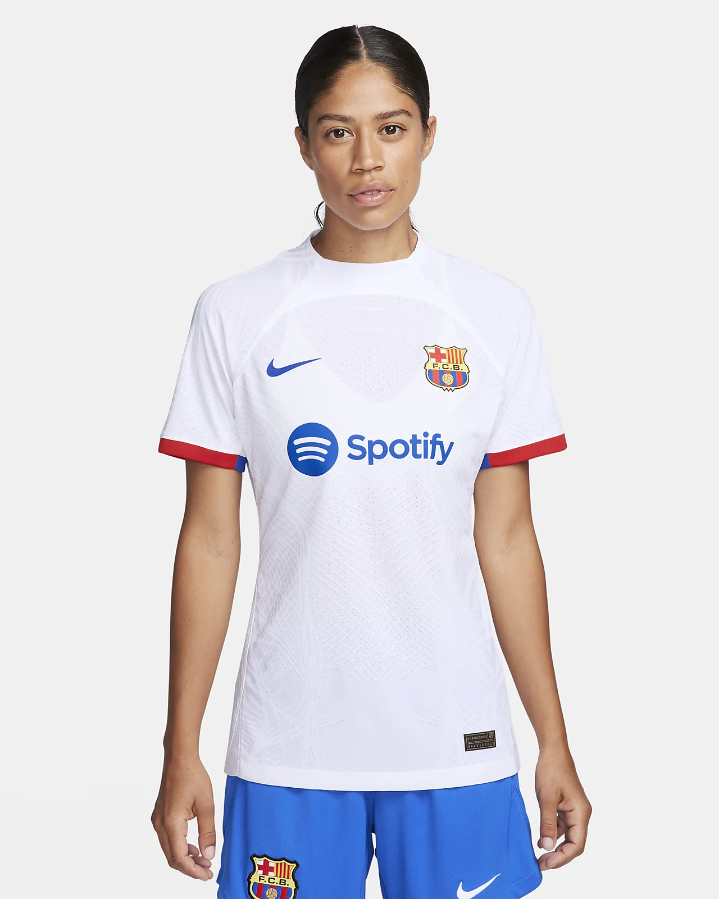
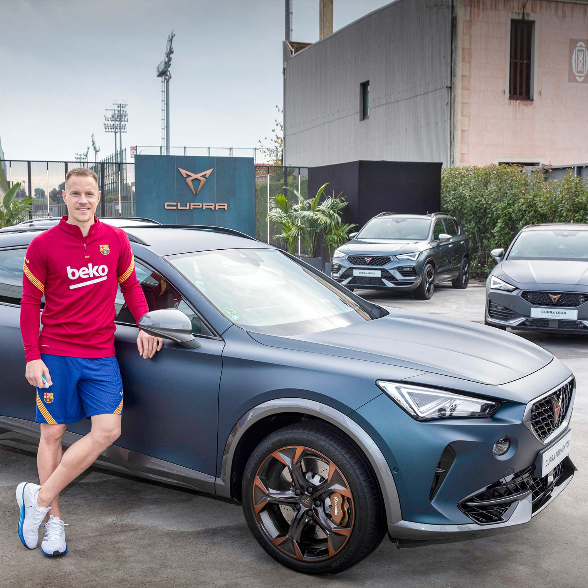

Nos Commanditaires
Le FC Barcelona est fier de collaborer avec des marques et entreprises renommées à l'échelle mondiale. Ces partenariats contribuent à notre succès et soutiennent l'équipe sur et en dehors du terrain.
Nike
Nike est le sponsor officiel de l'équipement du FC Barcelona, fournissant des tenues de match et de l'équipement d'entraînement.
Rakuten
Rakuten est le sponsor principal du FC Barcelona, avec une présence sur les maillots de l'équipe et divers événements internationaux.
Spotify
Spotify est le partenaire global de divertissement du FC Barcelona, apportant des expériences musicales inoubliables aux fans du club.
CUPRA
CUPRA, marque automobile, soutient le FC Barcelona en tant que partenaire officiel de mobilité, fournissant des véhicules électriques et de haute performance.
